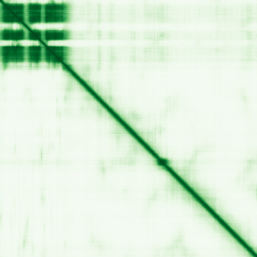
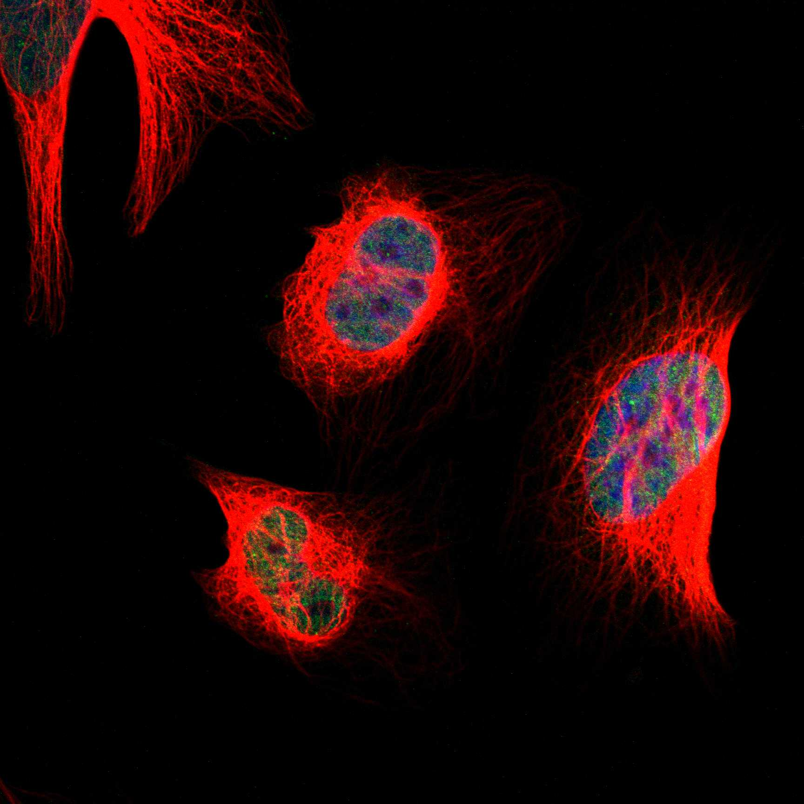
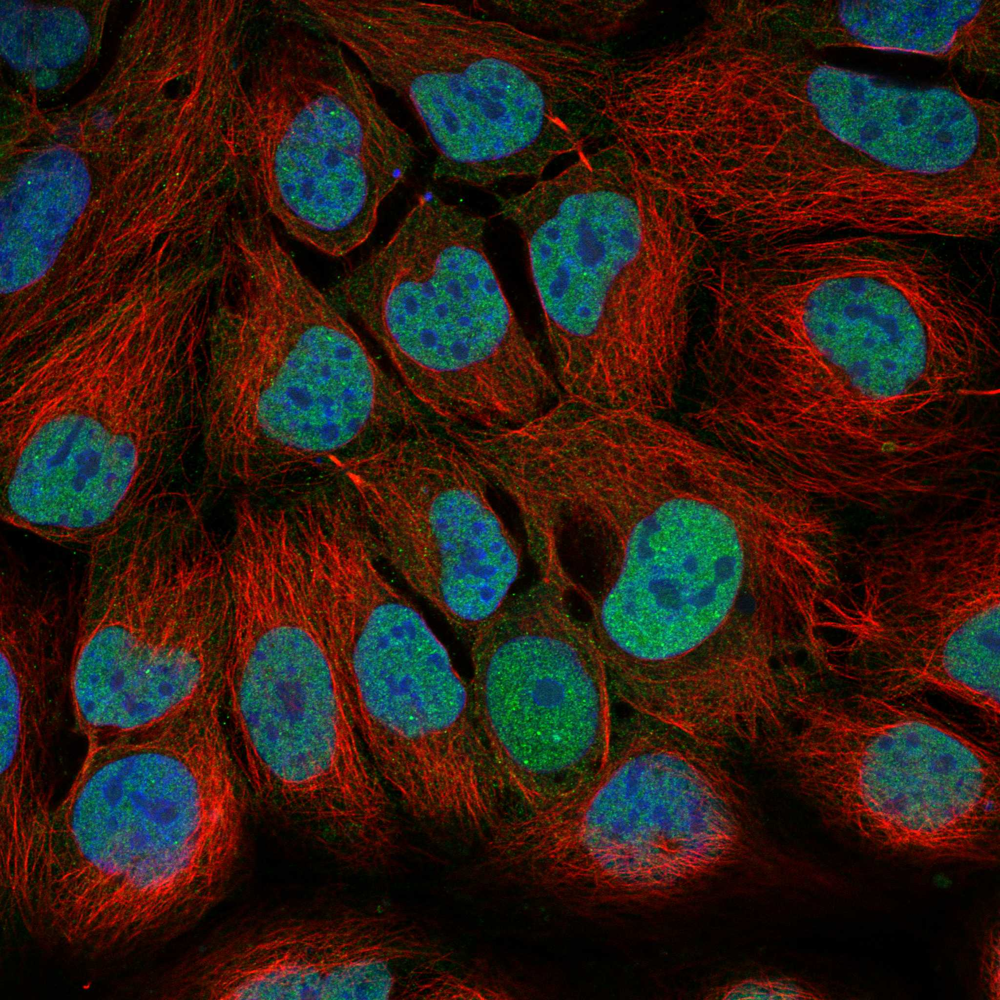

type: protein-evaluation gene: "HSF5" date: 2026-06-01 tags: [protein-scout, nucleoplasm, evaluation] status: scored ---
HSF5 核蛋白评估报告
1. 基本信息
| 项目 | 内容 |
|---|---|
| 基因名 / 别名 | HSF5 / HSTF5 |
| 蛋白全名 | Heat shock factor protein 5 |
| 蛋白大小 | 596 aa / 65.3 kDa |
| UniProt ID | Q4G112 |
2. 评分总览
| 维度 | 得分 | 新权重 | 加权后 | 关键证据摘要 |
|---|---|---|---|---|
| 核定位特异性 | 8/10 | ×4 | 32.0 | HPA: Nucleoplasm Approved; UniProt: Nucleus+Chromosome (ECO:0000250); 减数分裂染色质关联 TF |
| 蛋白大小 | 5/10 | ×1 | 5.0 | 596 aa, 65.3 kDa |
| 研究新颖性 | 8/10 | ×5 | 40.0 | PubMed strict=22, broad=44 |
| 三维结构 | 6/10 | ×3 | 18.0 | PDB 8ZYS X-ray 2.00A DBD 部分; AlphaFold pLDDT 52.8 (整体无序) |

| 调控结构域 | 7/10 | ×2 | 14.0 | HSF DNA-binding domain (PF00447); 雄性减数分裂关键 TF |
| PPI 网络 | 4/10 | ×3 | 12.0 | STRING 弱 (最高 HRC 0.573); IntAct 仅 3 partners; UniProt 无记录 |
| 加权总分 | 121/180** | |||
| 互证加分 | +1.0 | HSF 家族 TF; 近期多篇减数分裂关键文献 (2024-2025) | ||
| 归一化总分 (÷1.83) | 66.1/100** |
3. 详细分析
3.1 核定位证据
| 来源 | 定位 | 可信度 |
|---|---|---|
| UniProt | Nucleus (ECO:0000250); Chromosome (ECO:0000250) | By similarity |
| GO-CC | nucleus (IEA:UniProtKB-SubCell); XY body (IEA:Ensembl) | Predicted |
| Protein Atlas (IF) | Nucleoplasm (Approved) | Approved |
HPA IF 状态: IF available (Approved reliability) — HPA 定位为 Nucleoplasm Approved。HSF5 是 heat shock factor 家族的 atypical member，不参与典型热休克反应，而是作为雄性生殖细胞减数分裂特异性转录因子。近期文献（PMID:39162221, PMID:38684656）明确其为 meiotic chromatin-associated 蛋白，在粗线期进展和雄性育性中不可或缺。核定位高度可信。
3.2 结构与结构域
| 指标 | 数值 |
|---|---|
| AlphaFold | AF-Q4G112-F1 |
| 平均 pLDDT | 52.8 |
| pLDDT >90 | 12.1% |
| pLDDT 70-90 | 8.2% |
| pLDDT 50-70 | 13.8% |
| pLDDT <50 | 65.9% |
| PDB | 8ZYS (X-ray 2.00A, A-F=11-132, DBD 部分) |
| InterPro | IPR000232 (HSF DNA-binding), IPR036388, IPR036390 |
| Pfam | PF00447 (HSF_DNA-bind) |
AlphaFold PAE 状态: PAE 已下载，见上图。整体 pLDDT 很低（52.8），超过 65% 残基置信度低于 50。PDB 8ZYS 仅覆盖 DBD（aa 11-132），其余大部分区域高度无序。这符合转录因子中常见的大量 IDR 特征，DBD 本身有结构支撑。
3.3 研究现状
| 指标 | 数值 |
|---|---|
| PubMed strict (Title/Abstract) | 22 |
| PubMed broad | 44 |
| 别名 | HSTF5（未用于 scoring） |
研究量少但质量高。2024-2025 年多篇关键文献：HSF5 作为 pachynema 进展不可或缺因子（PMID:39162221, NAR）；atypical HSF 在非应激条件下对雄性减数分裂关键（PMID:38684656, Nat Commun）；HSF5 缺陷导致人类和小鼠精子发生阻滞（PMID:38958533, Adv Sci）；以及在睾丸中染色质组织和转录重编程中的作用（PMID:40923305, Zool Res）。研究集中度极高（减数分裂），是 HSF 家族中研究最少但有独特生物学意义的成员。
3.4 PPI 网络（三源综合）
| Partner | Source | Score/Evidence | Relevance |
|---|---|---|---|
| HRC | STRING | 0.573 (exp 0.050) | Calcium binding, muscle |
| DNAJB1 | STRING | 0.471 (exp 0.099) | Hsp40 co-chaperone |
| HYOU1 | STRING | 0.445 (exp 0.133) | ER chaperone |
| HSPA4 | STRING | 0.405 (exp 0.133) | Hsp70 family |
| SAMHD1 | IntAct | anti tag coIP (PMID:25036637) | dNTPase, innate immunity |
| ACTN1 | IntAct | anti tag coIP (PMID:25036637) | Actin-binding |
| CCL8 | IntAct | one hybrid (PMID:33179750) | Chemokine |
| — | UniProt | 无记录互作 | — |
PPI 网络极为薄弱。STRING 最高分仅 0.573（HRC），且以 textmining 为主。IntAct 仅 3 个 partner（SAMHD1, ACTN1 via coIP; CCL8 via one-hybrid）。UniProt 无互作记录。PPI 信息极度匮乏是其最大短板。
4. 总体评价
HSF5 是一个高潜力的减数分裂特异性转录因子：核定位确认、研究新颖性高（PM=22）、近期高质量文献密集（2024-2025）、功能独特（雄性减数分裂粗线期进展）。主要短板是 PPI 网络极弱和无序结构比例高。但考虑到其 TF 属性和减数分裂中的染色质关联功能，PPI 弱可能因其为 pioneers 研究早期阶段。建议作为高优先级核质候选保留。
5. 数据来源
- UniProt: https://www.uniprot.org/uniprotkb/Q4G112
- AlphaFold: https://alphafold.ebi.ac.uk/entry/Q4G112
- PDB: 8ZYS
- PubMed: https://pubmed.ncbi.nlm.nih.gov/?term=HSF5
- Protein Atlas: https://www.proteinatlas.org/ENSG00000176160-HSF5


HPA IF 图像已本地嵌入。
PAE 图像说明: AlphaFold PAE 图像已重新获取并嵌入（见下方 PAE 图像修正块）；结构判断仍结合 pLDDT 与 PAE 综合判断。
<!-- AF_PAE_REPAIR_START --> PAE 图像修正（2026-06-05）: AlphaFold 提供 predicted aligned error 图像；此前“PAE 图像暂无数据”的表述为未获取/未嵌入导致。